Il tuo Mac, nitido ovunque
Video a colori pieni e uno schermo su misura, su iPad, iPhone e iPhone Duo. Come se fossi seduto davanti al tuo Mac.
4,99 €, si paga una volta sola. Nessun account, nessuna pubblicità.
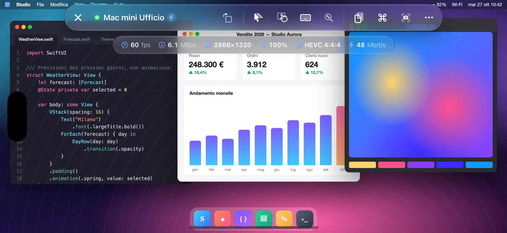
- 60 fps
- HEVC 4:4:4
- Retina
Come funziona
Open Remote PRO si collega alla Condivisione schermo integrata in macOS, la stessa usata da Apple Remote Desktop.
- Sul Mac non installi nulla
- Non crei nessun account
- Nessun dato passa da server esterni
Colori pieni, fluido a 60 fps
Video HEVC 4:4:4 a colori pieni, decodificato in hardware: testo nitido come sullo schermo del Mac, sfumature e foto senza aloni. Scorri, trascini finestre, guardi un video: tutto fluido fino a 60 fps, con bassa latenza.
Se il Mac non offre la modalità video, l'app passa da sola alle codifiche VNC classiche, senza che tu debba fare nulla.
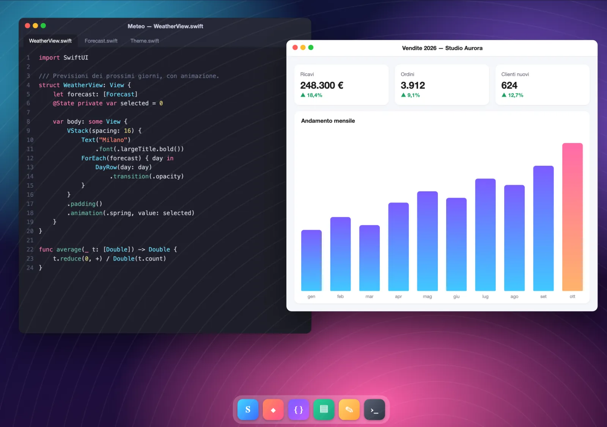
Lo schermo si adatta a te
Il Mac crea un monitor virtuale grande esattamente quanto il tuo schermo, in Retina: niente bande nere, niente testo minuscolo. Ruoti il dispositivo, usi Split View o Stage Manager, apri l'iPhone Duo: il monitor si ridimensiona da solo.
- Con la tastiera aperta scegli tu: scorri con due dita per vedere la parte coperta, oppure riduci lo schermo del Mac alla parte visibile.
- Su iPhone un pulsante ruota lo schermo anche con il blocco rotazione attivo.
- Mac con più monitor: passa dall'uno all'altro con un tocco o guardali tutti insieme.
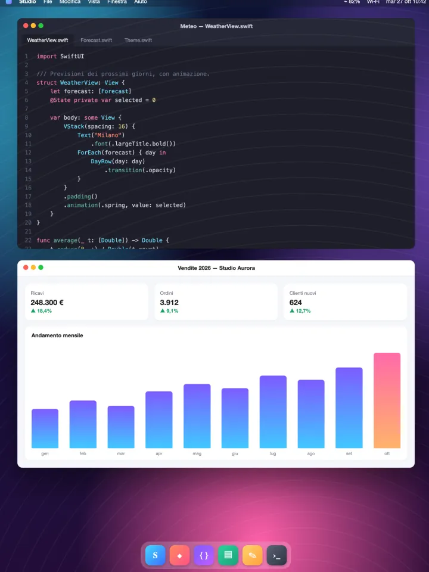
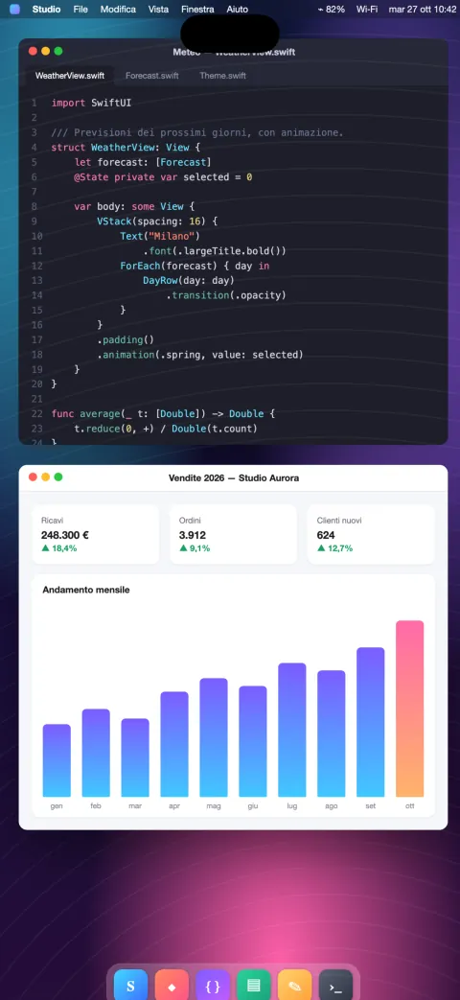
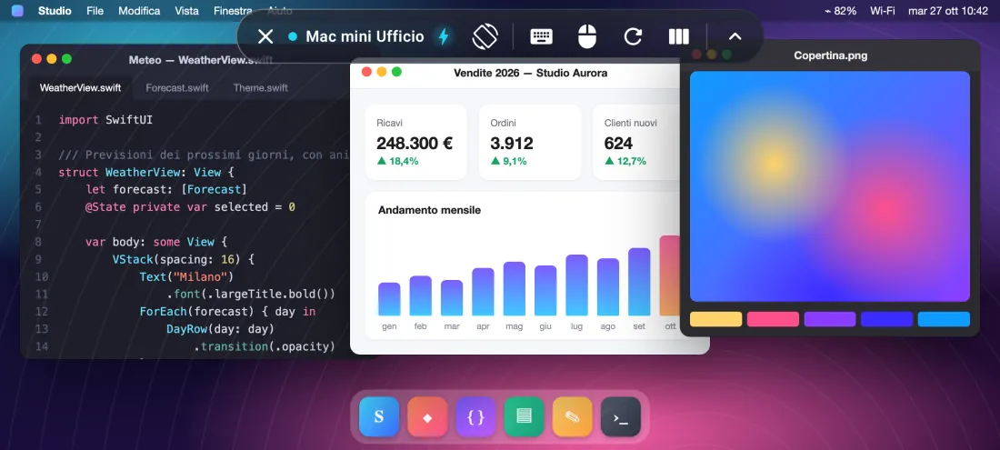
Ottimizzata per iPhone Duo
Apri il telefono e lo schermo del Mac si allarga con lui, chiudilo e si adatta allo schermo esterno.
Chiuso, il Mac si adatta allo schermo esterno. Aperto, diventa un vero desktop da 7,6 pollici, con lo spazio di un portatile.
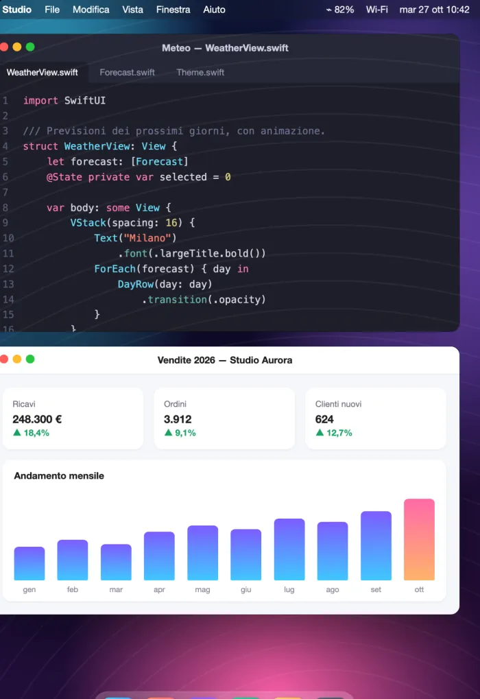
- Il monitor virtuale del Mac cambia misura nel momento in cui apri o chiudi il telefono: nessuna riconnessione, nessuna banda nera.
- La barra comandi si riorganizza da sola fra schermo esterno e interno.
- Pulsante per ruotare e proposta di rotazione quando giri il telefono.
Mouse, trackpad e tastiera
Pieno supporto per mouse, trackpad e tastiere Bluetooth e USB, compresi Magic Keyboard, Magic Trackpad e Magic Mouse.
- Puntatore che si muove e passa sopra gli elementi (hover), come sul Mac.
- Clic sinistro e clic destro.
- Scorrimento con due dita sul trackpad e con la rotella del mouse, continuo o a scatti.
- Tastiera fisica con il layout corretto, anche per lettere accentate e simboli.
- Tasti modificatori ⌘ ⌥ ⌃ ⇧.
Mouse e trackpad: su iPad. Tastiera fisica: su iPad e iPhone.
Prova: premi ⌘, ⌥, ⌃ o ⇧ sulla tua tastiera.
I tuoi Mac, a colpo d'occhio
Pensata per chi gestisce più Mac, a casa, in studio o in ufficio.
- Usi Apple Remote Desktop? Importa in un attimo l'elenco dei computer esportato da Remote Desktop.
- Schede con l'ultima immagine di ogni Mac e lo stato in tempo reale: disponibile o non raggiungibile.
- Scoperta automatica dei Mac sulla rete locale e connessione rapida per indirizzo.
- Gestione via SSH: hardware, sistema e dischi, app installate, blocco schermo, sospensione, riavvio e spegnimento, con verifica dell'identità del Mac.
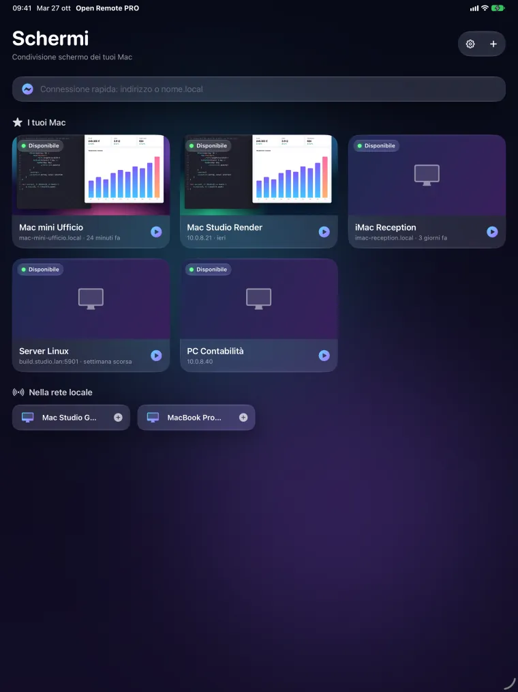
Controllo, compatibilità, privacy
Controllo naturale
- Modalità trackpad o tocco diretto, clic destro con due dita, zoom con le dita senza scatti.
- Scorrimento preciso con inerzia; tre dita per scorrere le pagine.
- Barra con esc, tab, frecce, F1–F12 e modificatori; scorciatoie pronte (Mission Control, Spotlight, istantanee e altro).
- Appunti condivisi tra il Mac e il tuo dispositivo; istantanee dello schermo da salvare o condividere.
- Modalità Osserva per guardare senza toccare nulla.
Anche PC e Linux
- Server VNC standard su Windows e Linux.
- PC Windows con Desktop remoto (RDP) su iPad e iPhone.
Android, presto su Google Play
Sul telefono, sul pieghevole e sul tablet Android: fluida fino a 60 fps, fino a 120 sugli schermi che lo supportano.
Privacy per progetto
- Nessun account, nessuna pubblicità, nessun tracciamento.
- Password e chiavi restano nel Portachiavi del tuo dispositivo.
- L'app si collega solo ai computer che indichi tu.
Come appare
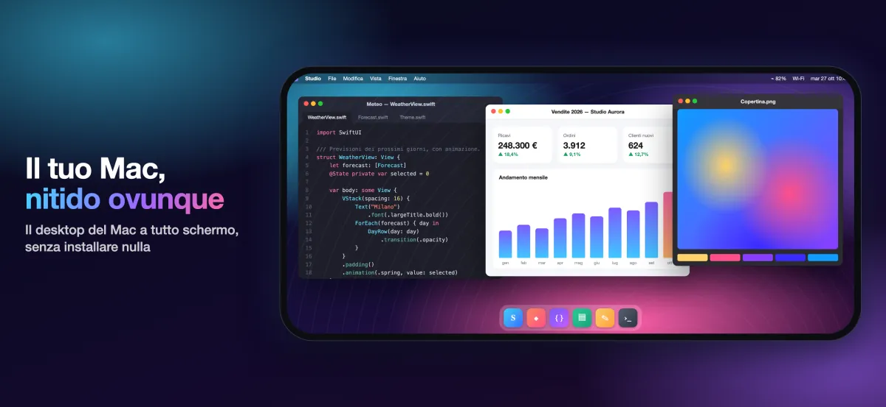
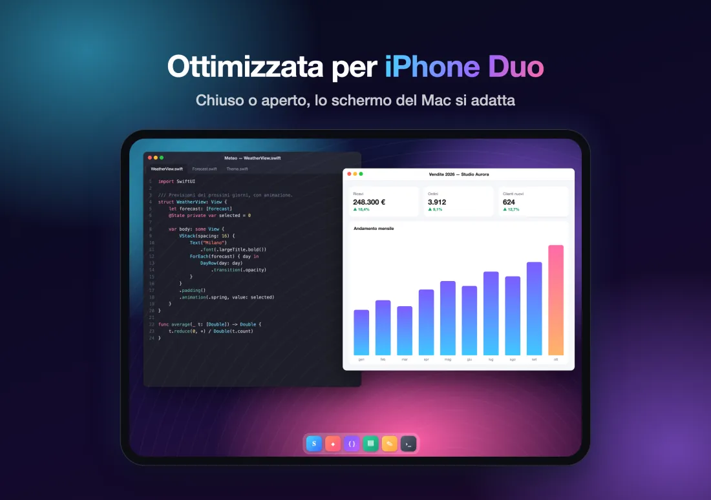
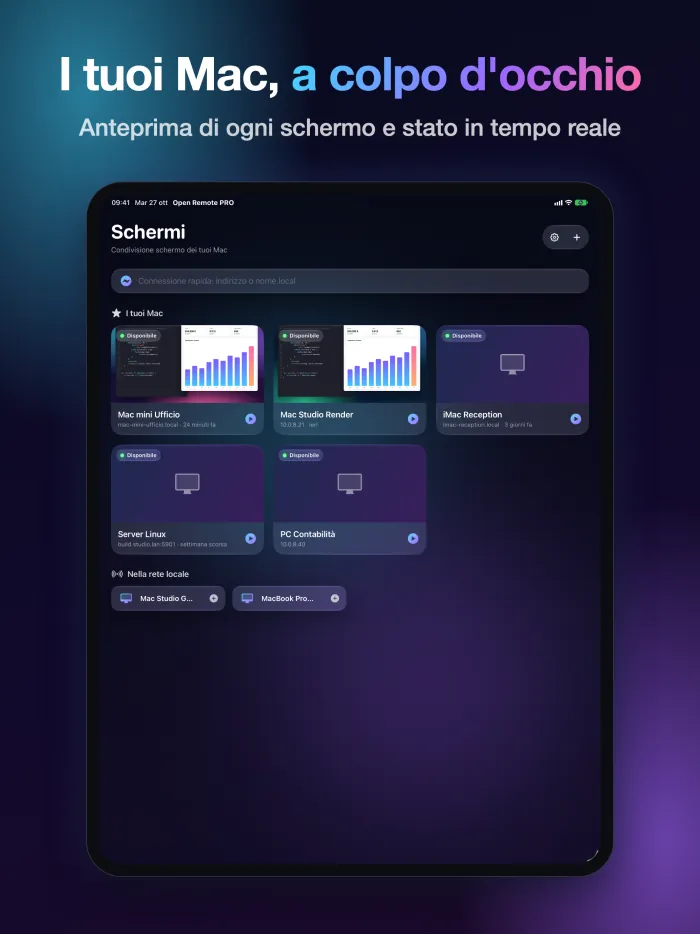
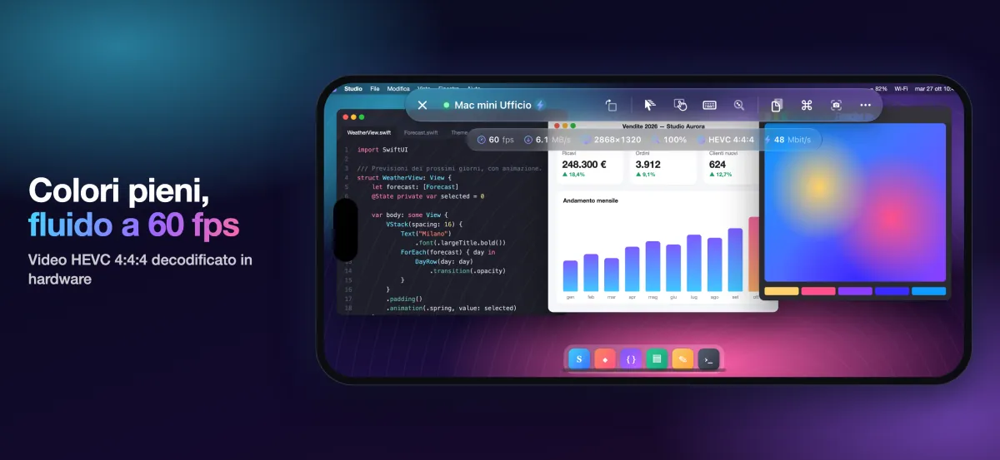
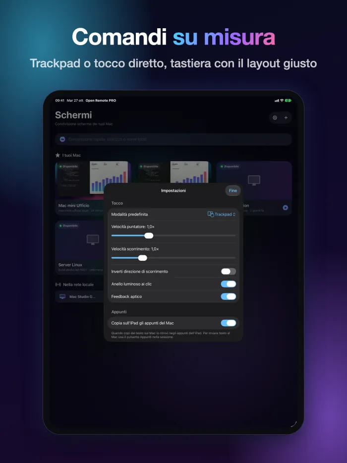
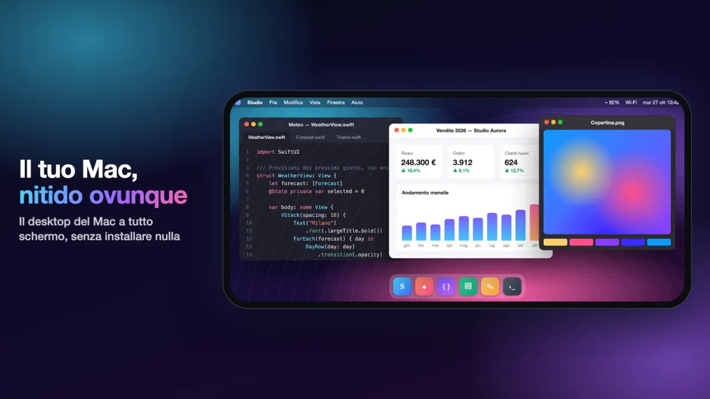
Un solo acquisto
4,99 €
Si paga una volta sola, su App Store.
Prezzo nei paesi dell'euro; altrove vale il prezzo mostrato dall'App Store.
Requisiti
Per il video ad alta qualità serve un Mac con chip Apple e macOS 14 o successivo, con Condivisione schermo attiva (Impostazioni di Sistema › Generali › Condivisione). Gli altri Mac e i server VNC funzionano con le codifiche classiche. Fuori casa o fuori ufficio usa una VPN.
Domande frequenti
Cosa devo installare sul Mac?
Niente. Sul Mac apri Impostazioni di Sistema › Generali › Condivisione e attiva Condivisione schermo. Poi aggiungi il Mac nell'app (se è sulla stessa rete lo trovi già nell'elenco) e accedi con nome utente e password di un utente del Mac.
Cosa serve per il video ad alta qualità?
Un Mac con chip Apple e macOS 14 o successivo. Gli altri Mac e i server VNC funzionano con le codifiche classiche.
Funziona anche fuori casa?
Sì, con una VPN verso la rete del Mac. Non esporre la Condivisione schermo direttamente su Internet.
Funziona con PC Windows e Linux?
Sì, con i server VNC standard su Windows e Linux. Su iPad e iPhone ti colleghi anche ai PC Windows con Desktop remoto (RDP).
Quali dati raccoglie l'app?
Nessuno: niente account, pubblicità o tracciamento. L'elenco dei computer, le password e le chiavi restano sul tuo dispositivo, e l'app si collega solo ai computer che indichi tu.
Quando arriva su Android?
L'app per Android è in arrivo su Google Play, per telefoni, pieghevoli e tablet.
Altre risposte nella pagina di supporto.